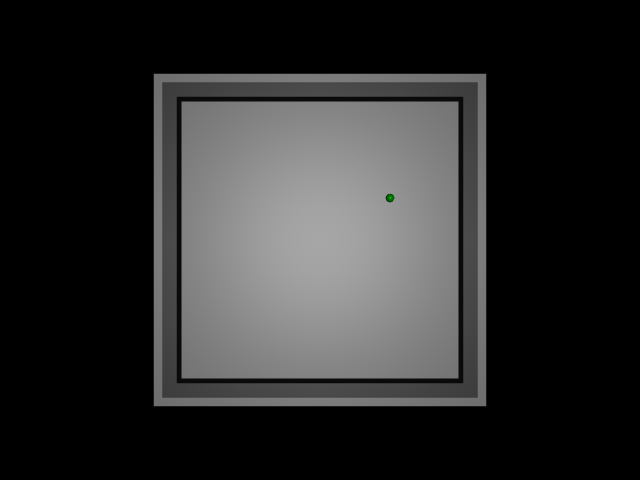
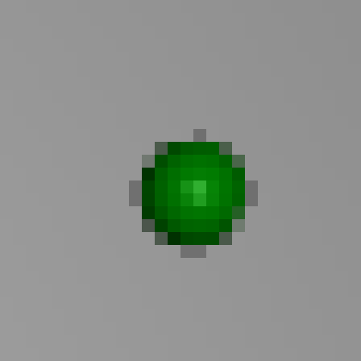
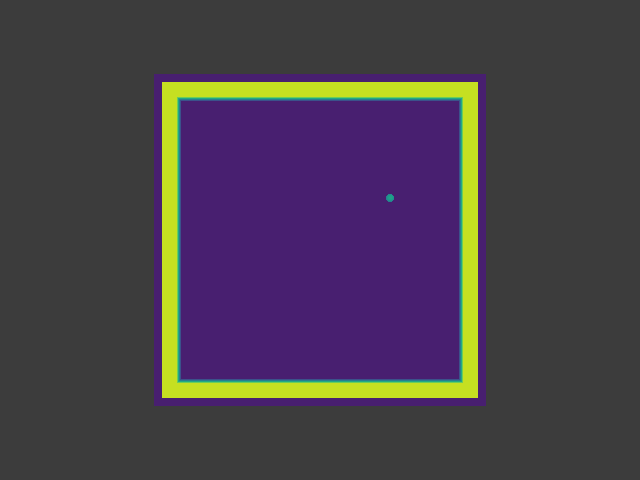

الدرس B2 · الطبقة 1: الحدس
صورتان من كاميرا واحدة: اللون والعمق
صور هذه الصفحة حقيقية: رسمها MuJoCo من كاميرتنا (3 م، 60°) والكرة عند (0.5, 0.3).
1. صورة اللون (RGB)

نرى الساحة في وسط الصورة (مربع رمادي)، حولها إطار الجدران بدرجات رمادي مختلفة، وخارجها خلفية سوداء (ما وراء الأرض). الكرة نقطة خضراء صغيرة عند اليمين والأعلى قليلاً. الكرة تظهر بحوالي 52 بكسلاً أخضر.

هذه الكرة مكبّرة (كل مربع صغير بكسل واحد): دائرة من البكسلات الخضراء، أفتح في الوسط. المرحلة الأولى في برنامجنا هي إيجاد هذه البكسلات.
2. صورة العمق (depth)

في هذه الصورة لا يوجد لون حقيقي. كل بكسل يخزّن رقماً: بُعد النقطة المرئية عن الكاميرا بالمتر. وفي الصورة أعلاه أعطيتُ الألوان معاني للتوضيح: الأصفر الأقرب، والبنفسجي الأبعد، والرمادي «لا يوجد سطح» (خلفية).
| what the pixel sees | depth (m) |
| floor | 3.000 |
| top of a wall (0.1 m high) | 2.900 |
| top of the ball | 2.941 |
| nothing (beyond the floor) | very large |
الجدار أقرب (2.90) لأن ارتفاعه 10 سم. وقمة الكرة 2.94 = 3 − 0.06، أي ارتفاع القمة فوق الأرض (قطر الكرة).
3. كيف نحصل على مكان الكرة؟ أربع خطوات
- نجد الكرة في صورة اللون: نأخذ البكسلات الخضراء.
- نحسب مركزها: متوسط أماكن هذه البكسلات: (u, v) = (389.5, 197.5).
- نقرأ العمق عند هذا البكسل: z = 2.9408 m.
- نحوّل إلى متر بالإسقاط العكسي (B1 L3 و L4): (x, y) = (0.5003, 0.3002).
الحقيقة (0.5, 0.3). الخطأ أقل من ملّيمتر في هذا المثال (حوالي 0.3 مم). وهذا ما يفعله برنامجنا لكل صورة، 60 مرة في الثانية.
سؤال للتأكد
لماذا نحتاج إلى صورة اللون و صورة العمق معاً؟ ماذا لو امتلكنا واحدة فقط منهما؟ (فكّر: أي منهما يخبرنا «أين الكرة في الصورة»، وأيهما «كم تبعد».)
القادم: B2 الطبقة 2 (التعريفات: صورة العمق كمصفوفة، قناع اللون، المركز).